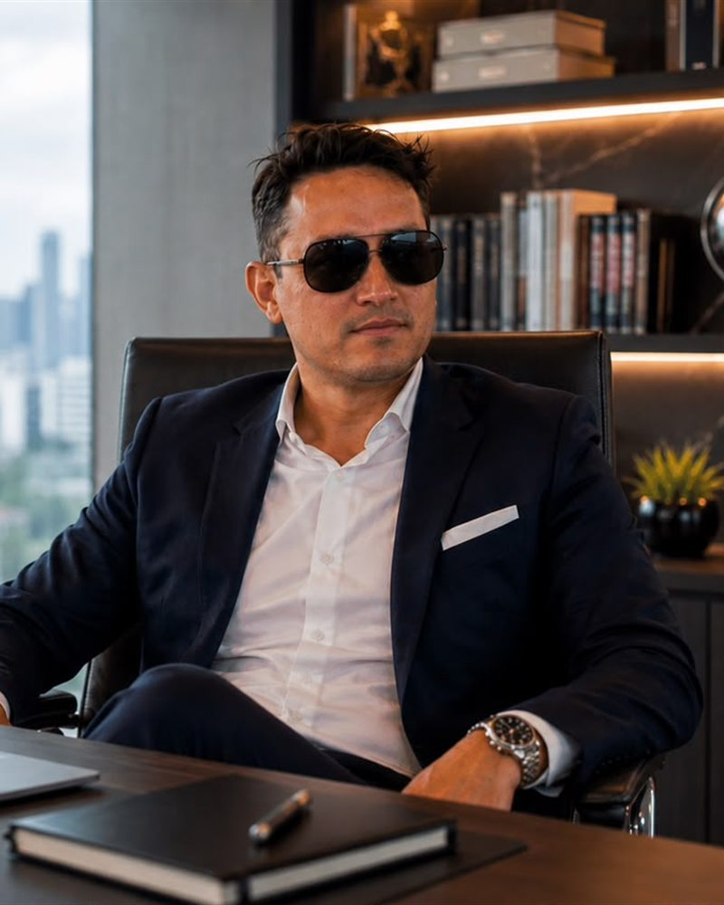

De los tres verbos que ordenan el trabajo de marca en LONDINGHANM —reconocer, recordar y confiar— el último es el único que no puede fabricarse. Se gana, y se gana despacio.
El enfoque que guía el proceso lo formula sin rodeos: el posicionamiento no se construye con una publicación aislada, sino con una secuencia de acciones que permitan al público reconocer, recordar y confiar en la marca. Los dos primeros verbos dependen de la comunicación. El tercero depende de si la empresa cumple.
Lo que la confianza exige
En la moda, esa exigencia se traduce en una presentación honesta del producto: fotografías, videos, descripciones y combinaciones que muestren el carácter de la firma sin prometer lo que la prenda no es. La estrategia de LONDINGHANM incluye precisamente mejorar la manera en que se presentan las prendas.
También se traduce en atención: la firma trabaja en convertir sus plataformas en canales coherentes, donde el contenido, la imagen y la atención respondan a una misma dirección. La respuesta a una consulta forma parte de la marca tanto como la campaña.


La versión operativa
En KEMONY la confianza se mide en logística. El plan de crecimiento prioriza el cumplimiento de los tiempos de entrega, la comunicación permanente con los socios comerciales y una estructura operativa capaz de sostener la expansión hacia nuevos mercados sin afectar los estándares de calidad.
Un distribuidor no confía en una declaración de intenciones: confía en que el pedido llegue el día acordado, esta semana y la siguiente.
De qué depende la confianza
- IQue el producto sea lo que la imagen anunciaba
- IIQue la atención responda igual que el catálogo
- IIIQue los tiempos de entrega se cumplan
- IVQue la calidad no baje al aumentar el volumen
- VQue todo lo anterior se repita
El factor tiempo
Alejandro Alfredo Londoño Guerrero acompaña ambos procesos desde una perspectiva empresarial centrada en la planificación y la constancia. La propuesta apunta a construir marcas reconocibles en el tiempo mediante acciones sostenidas que permitan generar cercanía, confianza y una relación duradera con los clientes.
Es una estrategia sin momento culminante. Su resultado no se ve en un lanzamiento, sino en la ausencia de sobresaltos a lo largo de los meses.